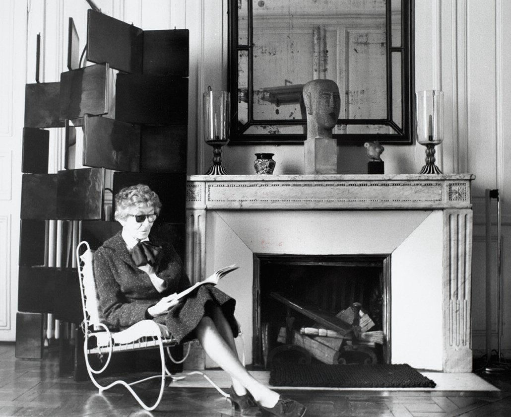

Eileen Gray was een Ierse meubelontwerpster, architect en pionier binnen het modernisme in de architectuur. Ze is een multidisciplinair voorbeeld doordat ze vele kunstvormen combineerde in haar loopbaan.
Vader Gray moedigde de artistieke interesse van zijn dochter aan door haar aan de ‘Slade School of Fine Art’ schilderkunst te laten studeren. Later ontwikkelde de interesse voor lakwerk en kreeg ze haar eerste opdracht; een interieur ontwerpen voor het appartement van hoedenmaakster Madam Mathieu Lévy. Ze was opzoek naar een originele en innovatieve verandering. Eileen ontwierp hier haar befaamde Bibendumstoel en plaatste panelen met lakwerk aan de muren. Het idee was dat het interieur de aandacht niet zou afleiden van de objecten die in de winkel werden tentoongesteld. Het ontwerp van de Bibendumstoel verschilde geheel van Grays eerdere, traditionelere werk en sloot beter aan bij de toenmalige Modernistische stroming in architectuur en ontwerp.
Ze toonde interesse in bouwkunst en was ijverig genoeg om zichzelf bij te schaven, zonder enige opleiding en vechtende tegen de overheersende mannelijke hiërarchie.

In 1924 begon Gray samen met haar partner Jean Badovici aan het ontwerp voor het huis E-1027 in Roquebrune-Cap-Martin in Zuid-Frankrijk nabij Monaco. Ze zet leefbaarheid voorop, naar haar mening waren de huizen van de Zwitserse architect Le Corbusier te gestandaardiseerd en niet gericht op het comfort van bewoners.

‘As if a house should be conceived for the pleasure of the eye more than for the well-being of its inhabitants.’
Ze leerde tapijten en wandkleden weven na haar reis in Noord-Afrika. Haar werkplaats in Parijs beschikte over een aantal vrouwelijke wevers die tapijten maakten waarvan de abstracte en geometrische motieven geïnspireerd leken op De Stijl, Bauhaus en de Russische avant-garde. Haar nieuwe meubels waren licht, draagbaar en multifunctioneel. De stalen tafels en stoelen zijn intussen massaal gekopieerd in hotelfoyers, bedrijven en luxe huizen.
“She had an idea of mass production for the everyday man.” – Marco Orsini
“I like to create things; I don’t need to possess them.”
Kunnen we Eileen Gray als één van de reuzen van het modernisme beschouwen? Gray zelf zou hebben gezegd: “Mais c’est absurde. The future projects light, the past only shadows”. Ze humaniseerde niet alleen de architecturale wereld, ze creërde dingen die het belang van interieurarchitectuur naar boven bracht. We moeten haar zien als de voorloper van dergelijke solo-vrouwelijke architecten als Zaha Hadid.
Eileen Gray was niet alleen een Ierse meubelontwerpster, architect en pionier binnen het modernisme in de architectuur. Ze staat mee aan het hoofd voor het opkomend feminisme van het midden van de 20ste eeuw.
Een belangrijk icoon in de evolutie van het modernisme in Israel. Raffi Lavie is geboren in 1937 in Tel Aviv en stierf in 2007, de Joodse man creëerde in deze tijd een zeer uitgebreide collectie.
In de jaren 50 maakte hij zijn eerste betekenisvolle werken, deze leken op kindertekeningen. Spontane krabbels die gecombineerd werden met abstracte witte vlakken. Hij creëerde een collagetechniek met als hoofdzaak zichzelf hierin te kunnen uiten, zijn levensverhaal wordt verteld in het schilderij. De collages vormen een balans tussen abstract expressionisme en graffiti.
Hij was een bekritiseerde kunstenaar die niet aanvaard werd in zijn tijd. Zijn werken riepen negatieve gevoelens op bij het volk:
teleurstelling, woede en agressie.
Lavie zijn werken focussen zich op het begrijpen van eigen cultuur, manieren en beleeftheidscodes. Zijn werken hadden zelfs op zijn tegensctanders een zeer grote inpact.
Hij gaf 40jaar les aan HaMidrasha – Faculty of the Arts, een Israëlische kunstschool in het Zuiden van Tel Aviv. Hier maakte hij het vak eigen, zoals veel collega’s in dezelfde sector.
Lavie wordt vooral geassocieerd met de jaren ’70-’80 stijl in Israel. Deze werd benoemd als "the want of matter”: gebrek aan materie. Deze visie werd later vertaald naar de kunstterm,“Arte Povera”: Een geladen relatie met ruwe, goedkope en lage kwaliteitsmaterialen.
Hij ruilt het typische canvas in voor multiplex, een materiaal dat als slecht en goedkoop beschreven werd.
De structuur en reliëf zorgen voor een extra dimensie in de werken.
Bij Arte povera maakt men installaties met eenvoudige materialen. Het was een invloedrijke kunststroming in de jaren zeventig met raakvlakken aan de internationale fenomenen zoals land art, minimal art en conceptuele kunst. Veel van de artiesten in deze stijl waren gevestigd in Tel Aviv.
Het grove, onopgesmukte en bijna armoedige gevoel van hun werk leek de vervallen stadsomgeving te weerspiegelen in plaats van het geïdealiseerde groene en vruchtbare landschap van het platteland.
Tussen de krabbels en vlakken schreef Lavie ook op zijn schilderijen, alsof het stadsmuren waren. Zo kleefde hij
allerlei zaken op zijn werken, onder andere magazines.
Hij minacht de bourgeoisie en hunschoonheidsideaal. Dit probeerde hij te weerleggen in kunst nadat hij uit de groep ‘new horizons’ werd gezet. Deze groep integreerde pop art, avant-garde, gevonden kunst, collages en fotografie in kunst. Amerikaanse kunst had hier een zeer grote invloed op, met in de hoofdrol popart.
Remment Lucas Koolhaas werd op 17 november 1944 geboren te Rotterdam waar hij opgroeide onder het dak van schrijver en filmcricitus Anton Koolhaas. Van leeftijd 8 tot 12 heeft het gezin in Indonesië gewoond waar ze de tijd namen om de kinderen in een rustige omgeving te laten opgroeien. Terug in Nederland is Rem gestart met een eerste opleiding aan de Nederlandse Filmacademie waar hij zich onder meer specialiseerde in het schrijven van scenario’s.
Hierna startte hij met een tweede opleiding aan de Architectural Association School in Londen waar hij van 1968 tot 1972 studeerde. In het jaar dat hij in Londen afstudeerde verwierf Rem ook een beurs om aan de Cornell University in de Verenigde Staten verder te studeren.
In 1975 richtte Rem Koolhaas samen met architect Elia Zenghelis en hun beide echtgenotes het architectenbureau Office for Metropolitan Architecture (OMA) op. Het bureau was niet zozeer gericht op het realiseren van talrijke projecten, maar startte eerder met het openen van verschillende architecturale debatten. Door deze keuze werden ze in de begin jaren vooral de papieren architecten genoemd. Het woord papier sloeg dan vaak op luttele prijsvragen, discussies en lezingen.
In 1995 kwam het bureau dicht tegen de rand van het faillissement te liggen en werd er de bewuste keuze gemaakt om een samenwerking te starten met de weger-adviesgroep uit Rotterdam. Deze samenwerking was echter van korte duur en sprong in 2002 officieel af.
Na de oprichting van het bureau kwam het eerste boek, Delirious New York. Dit boek wordt ook wel gezien als een van de eerste architecturale manifesten onder de toenmalige kunstenaars. Het boek tracht de filosofie van New York en specifiek Manhattan bloot te leggen. Volgens critici bevat het boek ontelbare verwijzingen naar de erotiek en de opwinding met als beste voorbeeld de expliciete cover van het boek.
‘The Culture of Congestion’, Wordt gezien als een van de belangrijkste termen uit het oeuvre van Rem Koolhaas. Hierbij zou hij verwijzen naar plekken op aarde waar prachtige dingen gebeuren. Verschillende menselijke activiteiten komen samen op een kleine oppervlak waardoor er verschillende verbindingen ontstaan tussen deze twee omgevingen. Eén van Koolhaas grootste doelen was het omvormen van elke vorm van negativiteit of een probleem tot het tegenovergestelde.
Rem Koolhaas wordt vanaf 1995 pas echt zelf actief als bouwend architect door de Rotterdamse Kunsthal. Na deze eerste grote bekendwording wordt het bureau internationaal actief. In datzelfde jaar verscheen de eerste versie van s, m, l, xl,
een architectuurroman waarin Koolhaas samenwerkte met grafisch vormgever Bruce Mau om een verzameling van OMA te bundelen en een hedendaags architecturaal denkkader uit te werken.
Tot de jaren tachtig werden er zelden projecten gerealiseerd doordat het bureau destijds beslist had om enkel ontwerpen voor openbare gebouwen te creëren zonder ze effectief te realiseren.
Eind jaren negentig besloot Rem Koolhaas om AMO op te richten. AMO was een eigen researchinstituut dat de samenwerkingsverbanden ondersteunde tussen het bureau en de Harvard Design School, waar Koolhaas ook een diploma behaalde. Het doel van dit bureau bestaat erin onderzoek uit te voeren naar thema’s zoals identiteit, cultuur en architecturale organisatie.
Ze waren onder meer al betrokken bij verschillende opdrachten voor Prada en de visuele communicatie rond de Europese Unie.
Naast zijn sprekende architectuur en geliefde boeken introduceerde hij het begrip Generic City aan de buitenwereld. Een echte beschrijving hiervan geeft hij zelden, maar deze korte zinnen zouden een omschrijving moeten zijn: “De Generic City is niet gepland, maar gebeurt zomaar.
Begrippen als stad, straat, identiteit en architectuur zijn dingen van het verleden. Het verleden is te klein om in te wonen.”
De Generic City wordt volgens hem gezien als de cultuur van deze tijd. Volgens Koolhaas kan men oosterse steden als Kuala Lumpur en Dubai het beste zien als voorbeelden van dit begrip. In Nederland ontwikkelde hij de binnenstad van Den Haag naar de principes van de Generic City.
In 2004 verscheen de eerste en tot hiertoe laatste uitgave van ‘Content’ onder leiding van Rem Koolhaas. Content was het vervolg op s, m, l, xl en werd gezien als een verzameling van zeven jaar hard werk van OMA. Volgens velen ziet het er eenvoudig, goedkoop en vervangbaar uit. Content wordt gezien als het product van een bepaald moment en vindt zijn inspiratie bij de schommelingen en instabiliteit van de 21ste eeuw. Waar deze instabiliteit als iets beangstigend wordt gezien, gebruikt Content deze als een vorm van vrijheid.
De indeling van het tijdschrift kent een specifieke opbouw, het is gerangschikt op geografische nabijheid. Hoe verder men bladert hoe meer men zich in de richting van het oosten voortbeweegt. Content wil mensen uitnodigen op plaatsen waar we geen autoriteit hebben of kennen. Plaatsen waar we er niet bij horen. Ze zoeken naar mogelijkheden om zekere visies te realiseren die we als mens thuis niet zouden verkrijgen. Content combineert de grootste deugd van OMA en AMO: Moed.
Sterling Ruby is een Amerikaanse hedendaagse kunstenaar, geboren in 1972. Hij is van veel merkten thuis en verwerkt in zijn projecten verschillende technieken zoals keramiek, schilderen, collage, sculptuur, video en textiel.
Deze resultaten combineerd hij tot een installatie. Hij haalt zijn inspiratie uit verscheidene domeinen, waaronder de psychologie en de huidige samenleving.
Wat zijn werk typeerd is dat deze vaak onleesbaar, gekrast, gecamoufleerd of vies zijn. Sterling vestigd zich momenteel in Los Angeles, waar hij zijn eigen studio heeft.
De collage techniek speelt in zijn werk een belangrijke rol. Hij beschrijft deze als een “illegale fusie”.
De naam van de collage BC verwijst naar Bleach Collage. Deze bevat gebleekte denim en canvas en verwijst naar de kunsthistorische datering “Before Christ”.
Deze reeks werken vormen een voorbeeld van hoe hij verscheidene materialen gebruikt om tot een geheel te komen. Hij hergebruikt vodden, denim, stukjes stof en kleding. Het resultaat is speels en zelfs een beetje pop-achtig. Hiernaast werkte hij met keramiek.
Later experimenteerde hij nog op veel verschillende manieren.
Hij komt in aanraking met mode en design en verwerkt deze in zijn toekomstige installaties. Dit gebeurde in samenwerking met grote mode ontwerpers.
In 2008 creëerde hij een interieur voor
Raf Simons’ winkel in Tokyo.Hij ontwierp een behang op basis van gebleekte stof.
In 2012 ontwierp Raf Simons satijnen stoffen voor met schilderijen van Sterling.
2 jaar later werken Simons en Sterling samen aan een collectie genaamd “Raf Simons / Sterling Ruby herfst / winter 2014”.
Deze herencollectie werd gepresenteerd tijdens de Paris
Fashion Week. Vanaf 2018 werkt Ruby
samen met Calvin Klein.
In het voorjaar van 2019 kondigde Ruby de lancering van zijn eigen collectie “SRSTUDIO.LA.CA.” aan.
Deze is volgens hem voortgekomen uit tien jaar experimenteren en ontwikkelen met zachte sculpturen, achtergronden en kleding. Ruby beschreef de collectie als: “For years I have been privately exploring garments as a medium, as something that impacts the way one can think, feel, and move.”